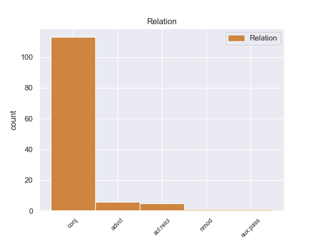
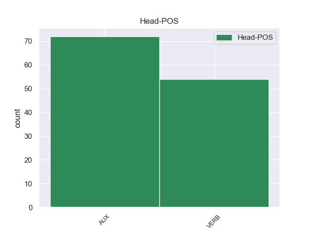
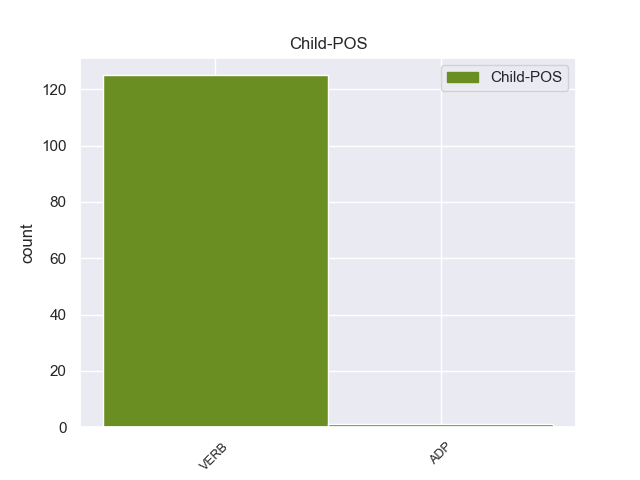

Distribution of features within this leaf



Agreement Rules sorted by frequency.
- When the dependent token is the conjunct(conj) of the head token, and the head token is VERB and the dependent token is VERB.
1 पत्रिका _ _ _ _ 0 _ _ _
2 के _ _ _ _ 0 _ _ _
3 अनुसार _ _ _ _ 0 _ _ _
4 खान _ _ _ _ 0 _ _ _
5 की _ _ _ _ 0 _ _ _
6 इन _ _ _ _ 0 _ _ _
7 यात्राओं _ _ _ _ 0 _ _ _
8 का _ _ _ _ 0 _ _ _
9 उद्देश्य _ _ _ _ 0 _ _ _
10 अभी _ _ _ _ 0 _ _ _
11 तक _ _ _ _ 0 _ _ _
12 स्पष्ट _ _ _ _ 0 _ _ _
13 नहीं _ _ _ _ 0 _ _ _
14 है है VERB VM Mood=Ind|Number=Sing|Person=3|Tense=Pres|VerbForm=Fin|Voice=Act 0 _ _ _
15 , _ _ _ _ 0 _ _ _
16 लेकिन _ _ _ _ 0 _ _ _
17 खुफिया _ _ _ _ 0 _ _ _
18 अधिकारियों _ _ _ _ 0 _ _ _
19 का _ _ _ _ 0 _ _ _
20 मानना _ _ _ _ 0 _ _ _
21 है है VERB VM Mood=Ind|Number=Sing|Person=3|Tense=Pres|VerbForm=Fin|Voice=Act 14 conj _ ChunkId=VGF2|ChunkType=head|Stype=declarative|Tam=hE|Translit=hai|Vib=है
22 कि _ _ _ _ 0 _ _ _
23 सऊदी _ _ _ _ 0 _ _ _
24 अरब _ _ _ _ 0 _ _ _
25 और _ _ _ _ 0 _ _ _
26 मिस्र _ _ _ _ 0 _ _ _
27 परमाणु _ _ _ _ 0 _ _ _
28 तक़नीक _ _ _ _ 0 _ _ _
29 की _ _ _ _ 0 _ _ _
30 तलाश _ _ _ _ 0 _ _ _
31 में _ _ _ _ 0 _ _ _
32 हैं _ _ _ _ 0 _ _ _
33 और _ _ _ _ 0 _ _ _
34 कई _ _ _ _ 0 _ _ _
35 अफ्रीकी _ _ _ _ 0 _ _ _
36 देश _ _ _ _ 0 _ _ _
37 कच्चे _ _ _ _ 0 _ _ _
38 यूरेनियम _ _ _ _ 0 _ _ _
39 संपन्न _ _ _ _ 0 _ _ _
40 हैं _ _ _ _ 0 _ _ _
41 । _ _ _ _ 0 _ _ _
1 अफ्रीकी _ _ _ _ 0 _ _ _
2 संघ _ _ _ _ 0 _ _ _
3 में _ _ _ _ 0 _ _ _
4 ५३ _ _ _ _ 0 _ _ _
5 देश _ _ _ _ 0 _ _ _
6 हैं है AUX VM Mood=Ind|Number=Plur|Person=3|Tense=Pres|VerbForm=Fin|Voice=Act 0 _ _ _
7 और _ _ _ _ 0 _ _ _
8 इनका _ _ _ _ 0 _ _ _
9 समर्थन _ _ _ _ 0 _ _ _
10 किसी _ _ _ _ 0 _ _ _
11 भी _ _ _ _ 0 _ _ _
12 प्रस्ताव _ _ _ _ 0 _ _ _
13 को _ _ _ _ 0 _ _ _
14 पारित _ _ _ _ 0 _ _ _
15 कराने _ _ _ _ 0 _ _ _
16 के _ _ _ _ 0 _ _ _
17 लिए _ _ _ _ 0 _ _ _
18 जरूरी _ _ _ _ 0 _ _ _
19 है है VERB VM Mood=Ind|Number=Sing|Person=3|Tense=Pres|VerbForm=Fin|Voice=Act 6 conj _ ChunkId=VGF2|ChunkType=head|Stype=declarative|Tam=hE|Translit=hai|Vib=है
20 । _ _ _ _ 0 _ _ _
1 राज्य _ _ _ _ 0 _ _ _
2 में _ _ _ _ 0 _ _ _
3 पार्टी _ _ _ _ 0 _ _ _
4 को _ _ _ _ 0 _ _ _
5 फिर _ _ _ _ 0 _ _ _
6 से _ _ _ _ 0 _ _ _
7 खड़ा _ _ _ _ 0 _ _ _
8 करने _ _ _ _ 0 _ _ _
9 के _ _ _ _ 0 _ _ _
10 लिए _ _ _ _ 0 _ _ _
11 आडवाणी _ _ _ _ 0 _ _ _
12 किसे _ _ _ _ 0 _ _ _
13 चुनेंगे चुन VERB VM Gender=Masc|Mood=Ind|Number=Sing|Person=3|Polite=Form|Tense=Fut|VerbForm=Fin|Voice=Act 16 advcl _ ChunkId=VGF|ChunkType=head|Stype=declarative|Tam=gA|Translit=cuneṁge|Vib=गा
14 इससे _ _ _ _ 0 _ _ _
15 पता _ _ _ _ 0 _ _ _
16 चलेगा चल VERB VM Gender=Masc|Mood=Ind|Number=Sing|Person=3|Tense=Fut|VerbForm=Fin|Voice=Act 0 _ _ _
17 कि _ _ _ _ 0 _ _ _
18 हाल _ _ _ _ 0 _ _ _
19 के _ _ _ _ 0 _ _ _
20 घटनाक्रम _ _ _ _ 0 _ _ _
21 में _ _ _ _ 0 _ _ _
22 विभिन्न _ _ _ _ 0 _ _ _
23 नेताओं _ _ _ _ 0 _ _ _
24 की _ _ _ _ 0 _ _ _
25 भूमिका _ _ _ _ 0 _ _ _
26 को _ _ _ _ 0 _ _ _
27 उन्होंने _ _ _ _ 0 _ _ _
28 किस _ _ _ _ 0 _ _ _
29 तरह _ _ _ _ 0 _ _ _
30 लिया _ _ _ _ 0 _ _ _
31 है _ _ _ _ 0 _ _ _
32 । _ _ _ _ 0 _ _ _
1 जहां _ _ _ _ 0 _ _ _
2 तक _ _ _ _ 0 _ _ _
3 दिल्ली _ _ _ _ 0 _ _ _
4 में _ _ _ _ 0 _ _ _
5 बारिश _ _ _ _ 0 _ _ _
6 का _ _ _ _ 0 _ _ _
7 सवाल _ _ _ _ 0 _ _ _
8 है है AUX VM Mood=Ind|Number=Sing|Person=3|Tense=Pres|VerbForm=Fin|Voice=Act 0 _ _ _
9 तो _ _ _ _ 0 _ _ _
10 यह _ _ _ _ 0 _ _ _
11 कम _ _ _ _ 0 _ _ _
12 दबाव _ _ _ _ 0 _ _ _
13 के _ _ _ _ 0 _ _ _
14 इस _ _ _ _ 0 _ _ _
15 क्षेत्र _ _ _ _ 0 _ _ _
16 के _ _ _ _ 0 _ _ _
17 घनीभूत _ _ _ _ 0 _ _ _
18 होने _ _ _ _ 0 _ _ _
19 पर _ _ _ _ 0 _ _ _
20 निर्भर _ _ _ _ 0 _ _ _
21 है है VERB VM Mood=Ind|Number=Sing|Person=3|Tense=Pres|VerbForm=Fin|Voice=Act 8 advcl _ ChunkId=VGF2|ChunkType=head|Stype=declarative|Tam=hE|Translit=hai|Vib=है
22 । _ _ _ _ 0 _ _ _
1 इसके _ _ _ _ 0 _ _ _
2 अलावा _ _ _ _ 0 _ _ _
3 कुछ _ _ _ _ 0 _ _ _
4 ऐसे _ _ _ _ 0 _ _ _
5 भी _ _ _ _ 0 _ _ _
6 नेता _ _ _ _ 0 _ _ _
7 हैं है AUX VM Mood=Ind|Number=Plur|Person=3|Tense=Pres|VerbForm=Fin|Voice=Act 0 _ _ _
8 , _ _ _ _ 0 _ _ _
9 जिनका _ _ _ _ 0 _ _ _
10 मानना _ _ _ _ 0 _ _ _
11 है है VERB VM Mood=Ind|Number=Sing|Person=3|Tense=Pres|VerbForm=Fin|Voice=Act 7 acl:relcl _ ChunkId=VGF2|ChunkType=head|Stype=declarative|Tam=hE|Translit=hai|Vib=है
12 कि _ _ _ _ 0 _ _ _
13 राज्यपाल _ _ _ _ 0 _ _ _
14 के _ _ _ _ 0 _ _ _
15 कार्यालय _ _ _ _ 0 _ _ _
16 को _ _ _ _ 0 _ _ _
17 नियंत्रित _ _ _ _ 0 _ _ _
18 करने _ _ _ _ 0 _ _ _
19 की _ _ _ _ 0 _ _ _
20 जरूरत _ _ _ _ 0 _ _ _
21 है _ _ _ _ 0 _ _ _
22 , _ _ _ _ 0 _ _ _
23 लेकिन _ _ _ _ 0 _ _ _
24 वे _ _ _ _ 0 _ _ _
25 भी _ _ _ _ 0 _ _ _
26 इस _ _ _ _ 0 _ _ _
27 मुद्दे _ _ _ _ 0 _ _ _
28 पर _ _ _ _ 0 _ _ _
29 एक _ _ _ _ 0 _ _ _
30 राष्ट्रीय _ _ _ _ 0 _ _ _
31 बहस _ _ _ _ 0 _ _ _
32 छेड़ने _ _ _ _ 0 _ _ _
33 की _ _ _ _ 0 _ _ _
34 जरूरत _ _ _ _ 0 _ _ _
35 समझते _ _ _ _ 0 _ _ _
36 हैं _ _ _ _ 0 _ _ _
37 । _ _ _ _ 0 _ _ _
Disagree Examples:
1 यह _ _ _ _ 0 _ _ _
2 संग्रहालय _ _ _ _ 0 _ _ _
3 इतना _ _ _ _ 0 _ _ _
4 विशाल _ _ _ _ 0 _ _ _
5 और _ _ _ _ 0 _ _ _
6 खूबसूरत _ _ _ _ 0 _ _ _
7 है है AUX VM Mood=Ind|Number=Sing|Person=3|Tense=Pres|VerbForm=Fin|Voice=Act 0 _ _ _
8 कि _ _ _ _ 0 _ _ _
9 इसे _ _ _ _ 0 _ _ _
10 निहारने _ _ _ _ 0 _ _ _
11 के _ _ _ _ 0 _ _ _
12 लिए _ _ _ _ 0 _ _ _
13 एक _ _ _ _ 0 _ _ _
14 दिन _ _ _ _ 0 _ _ _
15 कम _ _ _ _ 0 _ _ _
16 लगेगा लग VERB VM Gender=Masc|Mood=Ind|Number=Sing|Person=3|Tense=Fut|VerbForm=Fin|Voice=Act 7 advcl _ ChunkId=VGF2|ChunkType=head|Stype=declarative|Tam=gA|Translit=lagegā|Vib=गा
17 । _ _ _ _ 0 _ _ _
1 उन्होंने _ _ _ _ 0 _ _ _
2 कहा _ _ _ _ 0 _ _ _
3 कि _ _ _ _ 0 _ _ _
4 उत्तर _ _ _ _ 0 _ _ _
5 प्रदेश _ _ _ _ 0 _ _ _
6 में _ _ _ _ 0 _ _ _
7 विधान _ _ _ _ 0 _ _ _
8 सभा _ _ _ _ 0 _ _ _
9 चुनाव _ _ _ _ 0 _ _ _
10 करीब _ _ _ _ 0 _ _ _
11 हैं है AUX VM Mood=Ind|Number=Plur|Person=3|Tense=Pres|VerbForm=Fin|Voice=Act 0 _ _ _
12 और _ _ _ _ 0 _ _ _
13 कांग्रेस _ _ _ _ 0 _ _ _
14 निश्चित _ _ _ _ 0 _ _ _
15 रूप _ _ _ _ 0 _ _ _
16 से _ _ _ _ 0 _ _ _
17 सोनिया _ _ _ _ 0 _ _ _
18 के _ _ _ _ 0 _ _ _
19 इस _ _ _ _ 0 _ _ _
20 कथित _ _ _ _ 0 _ _ _
21 त्याग _ _ _ _ 0 _ _ _
22 को _ _ _ _ 0 _ _ _
23 भुनाएगी भुना VERB VM Gender=Fem|Mood=Ind|Number=Sing|Person=3|Tense=Fut|VerbForm=Fin|Voice=Act 11 conj _ ChunkId=VGF3|ChunkType=head|SpaceAfter=No|Stype=declarative|Tam=gA|Translit=bhunāegī|Vib=गा
24 , _ _ _ _ 0 _ _ _
25 जहां _ _ _ _ 0 _ _ _
26 पर _ _ _ _ 0 _ _ _
27 इस _ _ _ _ 0 _ _ _
28 समय _ _ _ _ 0 _ _ _
29 उसके _ _ _ _ 0 _ _ _
30 पास _ _ _ _ 0 _ _ _
31 मजबूत _ _ _ _ 0 _ _ _
32 जनाधार _ _ _ _ 0 _ _ _
33 नहीं _ _ _ _ 0 _ _ _
34 है _ _ _ _ 0 _ _ _
35 । _ _ _ _ 0 _ _ _
1 उन्होंने _ _ _ _ 0 _ _ _
2 कहा _ _ _ _ 0 _ _ _
3 कि _ _ _ _ 0 _ _ _
4 वह _ _ _ _ 0 _ _ _
5 द्विपक्षीय _ _ _ _ 0 _ _ _
6 मसलों _ _ _ _ 0 _ _ _
7 को _ _ _ _ 0 _ _ _
8 सुलझाने _ _ _ _ 0 _ _ _
9 के _ _ _ _ 0 _ _ _
10 लिए _ _ _ _ 0 _ _ _
11 प्रतिबद्ध _ _ _ _ 0 _ _ _
12 हैं है VERB VM Mood=Ind|Number=Sing|Person=3|Polite=Form|Tense=Pres|VerbForm=Fin|Voice=Act 0 _ _ _
13 और _ _ _ _ 0 _ _ _
14 इसके _ _ _ _ 0 _ _ _
15 लिए _ _ _ _ 0 _ _ _
16 प्रयास _ _ _ _ 0 _ _ _
17 करने _ _ _ _ 0 _ _ _
18 से _ _ _ _ 0 _ _ _
19 पीछे _ _ _ _ 0 _ _ _
20 नहीं _ _ _ _ 0 _ _ _
21 हटेंगे हट VERB VM Gender=Masc|Mood=Ind|Number=Sing|Person=3|Polite=Form|Tense=Fut|VerbForm=Fin|Voice=Act 12 conj _ ChunkId=VGF3|ChunkType=head|Stype=declarative|Tam=gA|Translit=haṭeṁge|Vib=गा
22 । _ _ _ _ 0 _ _ _
1 कोईराला _ _ _ _ 0 _ _ _
2 के _ _ _ _ 0 _ _ _
3 भतीजे _ _ _ _ 0 _ _ _
4 और _ _ _ _ 0 _ _ _
5 नेपाली _ _ _ _ 0 _ _ _
6 कांग्रेस _ _ _ _ 0 _ _ _
7 सदस्य _ _ _ _ 0 _ _ _
8 शेखर _ _ _ _ 0 _ _ _
9 कोइराला _ _ _ _ 0 _ _ _
10 ने _ _ _ _ 0 _ _ _
11 पत्रकारों _ _ _ _ 0 _ _ _
12 को _ _ _ _ 0 _ _ _
13 बताया _ _ _ _ 0 _ _ _
14 है _ _ _ _ 0 _ _ _
15 कि _ _ _ _ 0 _ _ _
16 ब्रोंकाइटिस _ _ _ _ 0 _ _ _
17 से _ _ _ _ 0 _ _ _
18 पीड़ित _ _ _ _ 0 _ _ _
19 कोईराला _ _ _ _ 0 _ _ _
20 की _ _ _ _ 0 _ _ _
21 तबियत _ _ _ _ 0 _ _ _
22 में _ _ _ _ 0 _ _ _
23 सुधार _ _ _ _ 0 _ _ _
24 हो _ _ _ _ 0 _ _ _
25 रहा _ _ _ _ 0 _ _ _
26 है है AUX VAUX Mood=Ind|Number=Sing|Person=3|Tense=Pres|VerbForm=Fin 0 _ _ _
27 और _ _ _ _ 0 _ _ _
28 वह _ _ _ _ 0 _ _ _
29 शनिवार _ _ _ _ 0 _ _ _
30 शपथ _ _ _ _ 0 _ _ _
31 लेंगे ले VERB VM Gender=Masc|Mood=Ind|Number=Sing|Person=3|Polite=Form|Tense=Fut|VerbForm=Fin|Voice=Act 26 conj _ ChunkId=VGF3|ChunkType=head|Stype=declarative|Tam=gA|Translit=leṁge|Vib=गा
32 । _ _ _ _ 0 _ _ _
1 सम्मेलन _ _ _ _ 0 _ _ _
2 में _ _ _ _ 0 _ _ _
3 मंगला _ _ _ _ 0 _ _ _
4 राय _ _ _ _ 0 _ _ _
5 ने _ _ _ _ 0 _ _ _
6 कहा _ _ _ _ 0 _ _ _
7 कि _ _ _ _ 0 _ _ _
8 कृषि _ _ _ _ 0 _ _ _
9 विज्ञान _ _ _ _ 0 _ _ _
10 केंद्र _ _ _ _ 0 _ _ _
11 भारतीय _ _ _ _ 0 _ _ _
12 कृषि _ _ _ _ 0 _ _ _
13 क्षेत्र _ _ _ _ 0 _ _ _
14 में _ _ _ _ 0 _ _ _
15 बदलाव _ _ _ _ 0 _ _ _
16 करने _ _ _ _ 0 _ _ _
17 के _ _ _ _ 0 _ _ _
18 माध्यम _ _ _ _ 0 _ _ _
19 हैं है AUX VM Mood=Ind|Number=Plur|Person=3|Tense=Pres|VerbForm=Fin|Voice=Act 0 _ _ _
20 और _ _ _ _ 0 _ _ _
21 भविष्य _ _ _ _ 0 _ _ _
22 में _ _ _ _ 0 _ _ _
23 इनकी _ _ _ _ 0 _ _ _
24 भूमिका _ _ _ _ 0 _ _ _
25 और _ _ _ _ 0 _ _ _
26 ज्यादा _ _ _ _ 0 _ _ _
27 अहम _ _ _ _ 0 _ _ _
28 होगी हो VERB VM Gender=Fem|Mood=Ind|Number=Sing|Person=3|Tense=Fut|VerbForm=Fin|Voice=Act 19 conj _ ChunkId=VGF3|ChunkType=head|Stype=declarative|Tam=gA|Translit=hogī|Vib=गा
29 । _ _ _ _ 0 _ _ _